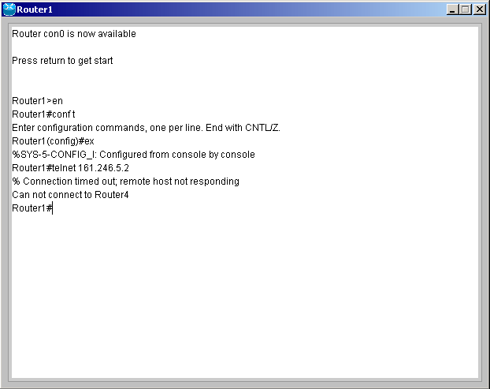
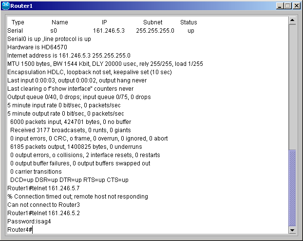

| Telnet | ||
| หลังจากที่ได้กำหนดค่าต่างๆ ให้กับเราเตอร์แล้ว ยังมีคำสั่ง Telnet ที่ใช้สำหรับกำหนดค่าให้กับเราเตอร์โดยไม่ต้องกำหนดจากหน้า console คำสั่ง Telnet นี้จะเรียกใช้จาก prompt โดยสามารถกำหนดพาสเวิร์ดในส่วนนี้ที่ VTY Password | ||
| 1. ล็อกอินเข้าเราเตอร์ที่ต้องการ หลังจากนั้นเข้าสู่ Privilege โหมดโดยพิมพ์คำสั่ง En หรือ Enable แล้วกด Enter | ||
| 2. ที่ R1# พิมพ์คำสั่ง Telnet 161.246.5.2 เพื่อเข้าไป config R4 แต่จะไม่สามารถเข้าไป config ได้เนื่องจากพาสเวิร์ดยังไม่ได้กำหนด | ||
|
 |
||
| 3.การกำหนด VTY Password โดยกำหนดที่
R1 และ R4 ดังนี้ R1(config)#line vty 0 4 R1(config-line)#login R1(config-line)#password isag1 R4(config)#line vty 0 4 |
||
| 4. กำหนดให้ที่ R2 ไม่มี VTY
Password ดังนี้ R2(config)#line vty 0 4 R2(config-line)#no login คำสั่งนี้จะทำให้เวลา Telnet เข้าไปสามารถเข้าไปสู่ prompt ได้โดยไม่ต้องใส่พาสเวิร์ดก่อน |
||
| 5. หลังจากกำหนดพาสเวิร์ดแล้วให้ลอง Telnet ไปที่ 161.246.5.2 อีกครั้ง เมื่อเข้าไปแล้วให้พิมพ์คำสั่ง Exit เพื่อกลับมาที่ R1 แต่ถ้าต้องการกลับมาที่ R1 โดยที่ไม่ต้องล็อกเอาท์ออกจาก R4 ก่อน สามารถทำได้โดยพิมพ์ Ctrl + Shift + 6 + X | ||
|
 |
||
|
สำหรับโหมดการทำงานทั้งหมดของเราเตอร์สามารถดูได้ที่
Command
|
||